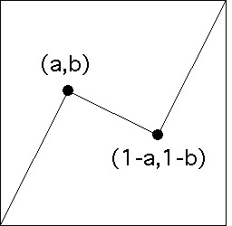
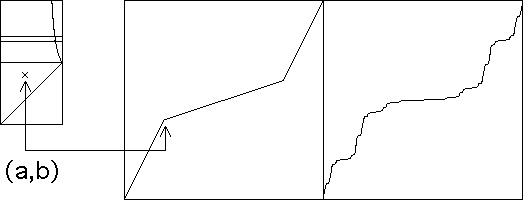

| Even with only two turning points (a, b) and (c, d),
the totality of possible graph behaviors
is difficult to visualize. |
| This is because a map of which turning points give
rise to which behaviors is 4-dimensional: a, b, c, and d can take on any values between
0 and 1, except that we must have a ≤ c. |
| One way to get a manageable picture of this is to consider only
symmetric cartoons. |
| That is, if the first turning
point is (a,b), the second is (c,d) = (1-a,1-b). |
| In other words,
the second turning point is determined by the first, so specifying (a,b)
determines the whole generator. |
|  |
| The turning point (a,b) can lie anywhere in the rectangle
0 <= a <= 1/2 and 0 <= b <= 1. |
| In the animation below we
sample some of the symmetric cartoons. |
| To make the symmetry more obvious, and the make
comparisons clearer, here we do not randomize the choice of UDU. |
|
 |
| Click the picture to animate. |
|